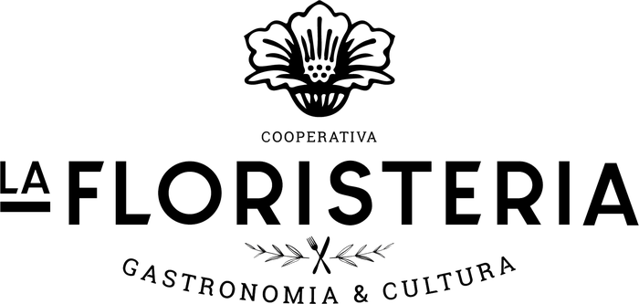

Restaurante La Floristeria
Restaurante con producto social en la plaza Masadas de Barcelona, en la Sagrera.
Proyecto que ya no está activo
Gastronomía y cultura en la plaza Masadas
La Floristeria fue un restaurante con producto social en la plaza Masadas, en el corazón de la Sagrera. Un espacio de gastronomía y cultura abierto al barrio, con mesas largas para compartir y la misma manera de entender la comida que aplicamos en el resto del proyecto.
Este apartado recoge las actividades que la cooperativa ha hecho y que actualmente no están activas. Las dejamos documentadas porque forman parte de dónde venimos.

Plaza Masadas · la Sagrera, Barcelona